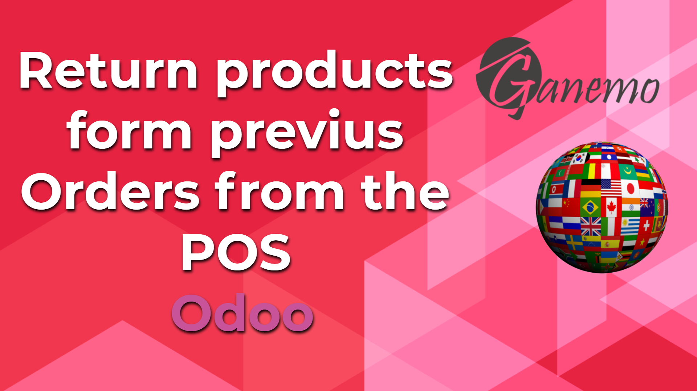

<section class="oe_container oe_dark">
    <div class="oe_row oe_spaced">
        <div class="oe_span8">
            
        </div>
        <div class="oe_span8">
            <span>Add a button in the Old Orders search section, which allows you to load a POS.order, with the same quantities but with a changed sign.
            It also adds additional information to the list view of the historical record, which is also searchable</span>
        </div>
    </div>
</section>
